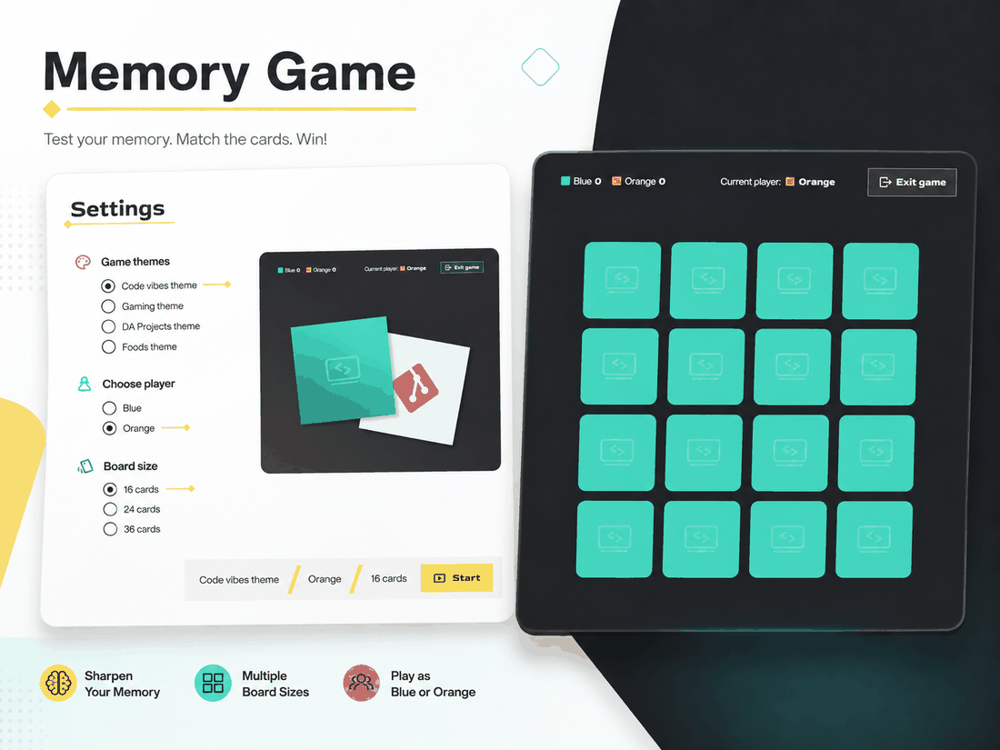
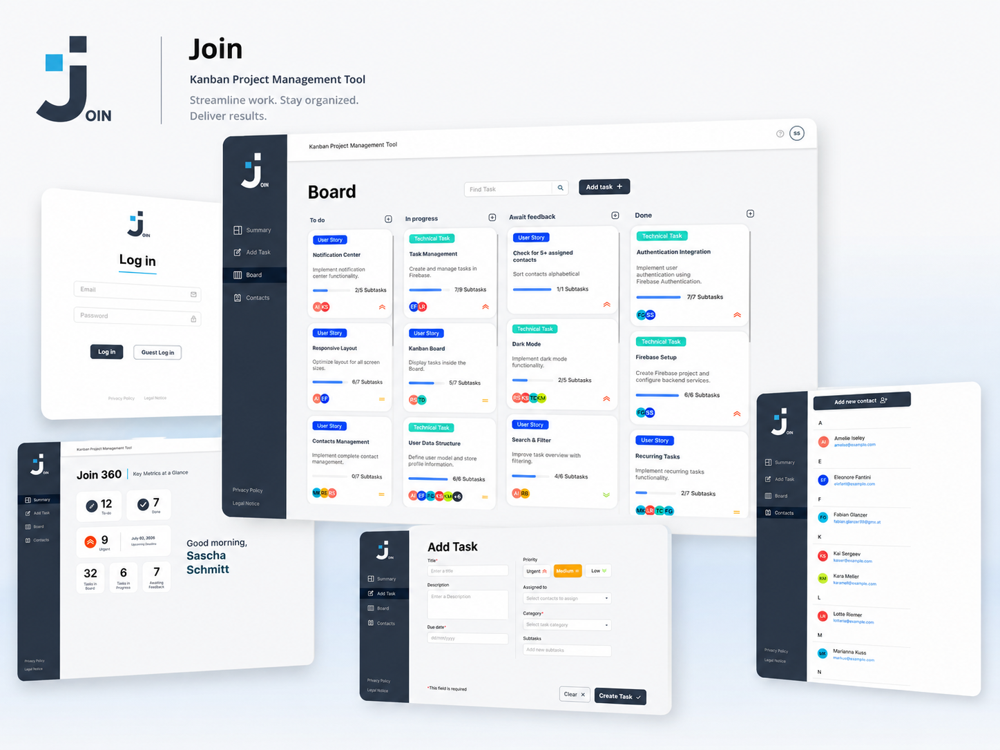
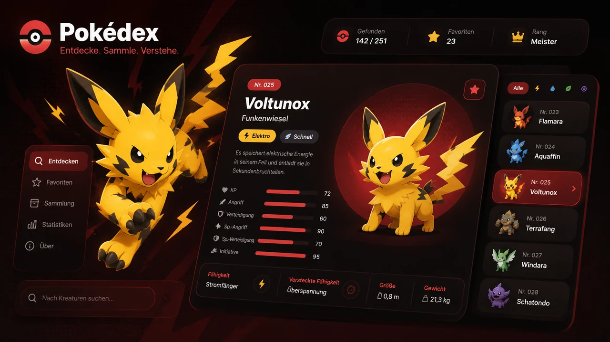
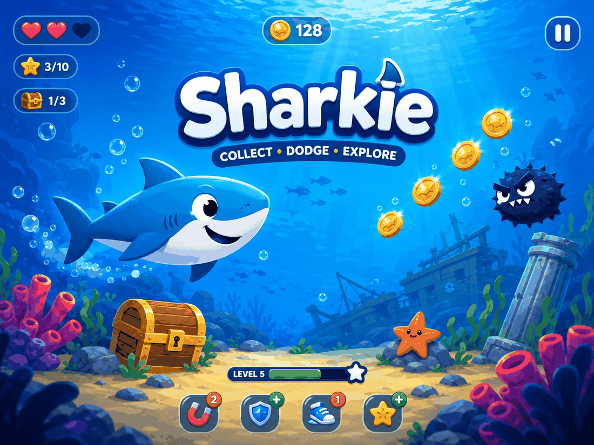
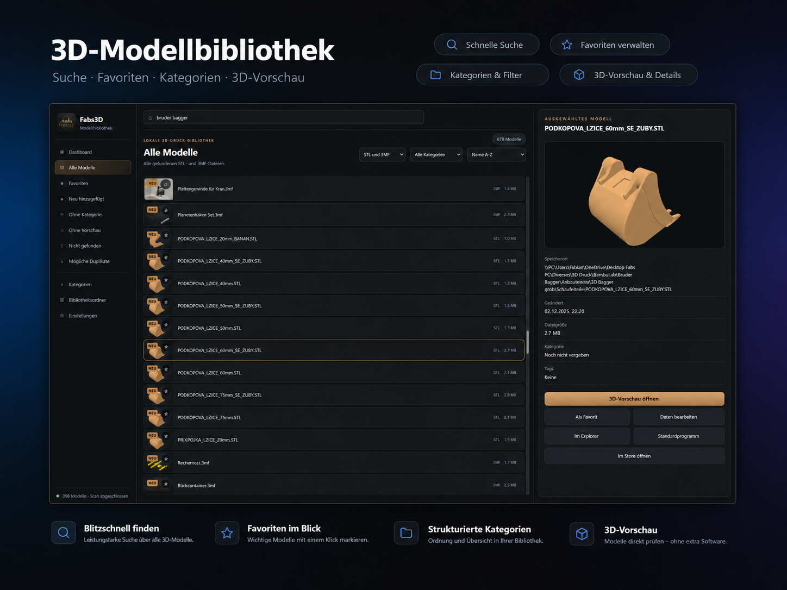
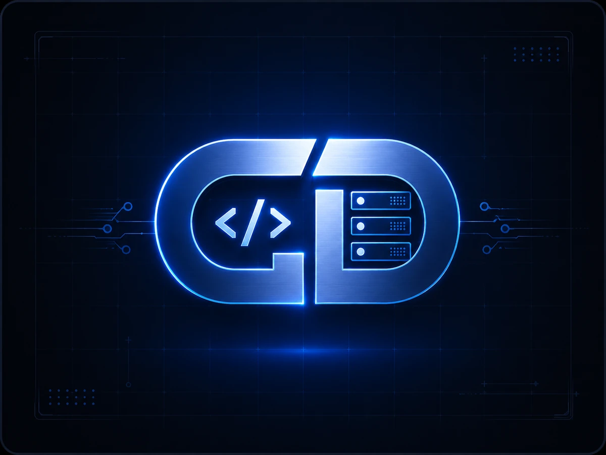

console:
Code wird geladen …
Webentwicklung · Software · Digitalisierung
Websites & Software, die einfach funktionieren.
Moderne Websites, individuelle Web-Anwendungen und digitale Lösungen – sauber entwickelt, verständlich umgesetzt und persönlich betreut.
- Persönlich
- Effizient
- Zuverlässig
Frontend HTML · CSS · JS · TS
Backend Firebase · APIs
Qualität Responsive · WCAG
Meine Leistungen
Digitale Lösungen mit praktischem Nutzen
Von der ersten Idee bis zur laufenden Betreuung – klar geplant, sauber umgesetzt und verständlich erklärt.
Webentwicklung
Moderne Websites und Landingpages, die auf Desktop, Tablet und Smartphone sauber funktionieren.
Softwarelösungen
Individuelle Web-Apps und Windows-Anwendungen, zugeschnitten auf konkrete Anforderungen.
Digitalisierung
Einfache digitale Werkzeuge, die wiederkehrende Abläufe übersichtlicher und schneller machen.
Webbetreuung
Änderungen, Updates, technische Pflege und laufende Unterstützung für bestehende Websites.
Welche Lösung passt?
Website, Landingpage oder Anwendung?
Du musst die technische Bezeichnung nicht selbst kennen. Entscheidend ist, was du erreichen möchtest. Hier siehst du die wichtigsten Unterschiede und typische Inhalte auf einen Blick.
Mehrseitig
Website
Ideal, wenn ein Unternehmen, eine Dienstleistung, ein Projekt oder eine Person ausführlich vorgestellt werden soll.
Typische Inhalte
- Startseite und Leistungen
- Über mich / Über uns
- Portfolio oder Referenzen
- Kontakt, FAQ und Formulare
- Bilder, Videos und Downloads
Eine Seite
Landingpage
Eine fokussierte Einzelseite mit einem klaren Ziel – zum Beispiel Anfrage, Anmeldung, Bewerbung oder Vorstellung eines bestimmten Angebots.
Typische Inhalte
- Starker Einstieg mit klarem Nutzen
- Vorteile und Leistungen
- Referenzen oder Beispiele
- Ablauf und häufige Fragen
- Kontakt oder WhatsApp-CTA
Interaktiv
Web-App / digitales Tool
Geeignet, wenn Besucher nicht nur Inhalte lesen, sondern aktiv mit Daten, Funktionen oder individuellen Abläufen arbeiten sollen.
Mögliche Funktionen
- Login und Benutzerbereiche
- Dashboards und Datenverwaltung
- Suche, Filter und Rechner
- Uploads, APIs und Firebase
- Adminbereiche und Workflows
Lokal
Windows-Anwendung
Sinnvoll, wenn eine Lösung direkt am PC arbeitet und stärker auf lokale Dateien, Daten oder wiederkehrende interne Abläufe zugreifen soll.
Mögliche Funktionen
- Dateien verwalten und durchsuchen
- Lokale Daten speichern
- Abläufe automatisieren
- 3D-Dateien oder Vorschauen anzeigen
- Individuelle interne Werkzeuge
Noch nicht sicher, was du brauchst?
Beschreibe einfach dein Ziel. Die passende technische Lösung lässt sich gemeinsam einordnen.
Projekt kurz beschreiben
Portfolio
Alle Projekte ansehen
Ausgewählte Projekte
Vier unterschiedliche Projekte – von Web-App und API bis zum interaktiven Browsergame.

SpielbarTypeScript · Game
Memory Game
Interaktives Memory-Spiel mit mehreren Themes, Spielfeldgrößen, Spielerwahl und responsiver Benutzeroberfläche.
- TypeScript
- Responsive UI

Live-DemoWeb-App · Kanban
Join
Kanban-Anwendung zur Organisation von Aufgaben mit Board, Taskverwaltung, Kontakten und responsiver Oberfläche.
- JavaScript
- Firebase

API-ProjektWeb-App · REST API
Pokédex
Dynamischer Pokédex mit API-Daten, Suche, Detailansicht und Navigation zwischen den geladenen Pokémon.
- JavaScript
- REST API

SpielbarJavaScript · Game
Sharkie
2D-Browsergame mit Tastatursteuerung, Gegnern, Sammelobjekten, Sounds und animierter Unterwasserwelt.
- JavaScript
- OOP

STL-Vorschau
Favoriten
Kategorien
Ansichten
Interaktive Web-Demo
01
02
03
04
Deine 3D-Modelle. Schnell gefunden. Direkt geprüft.
Die 3D-Modellbibliothek bringt Ordnung in große Modellsammlungen. Suchen, organisieren und STL-Dateien direkt prüfen – die wichtigsten Funktionen lassen sich auch in der Browser-Demo ausprobieren.
Eigene STL öffnen
Die ausgewählte Datei bleibt lokal in deinem Browser.
Direkt in 3D prüfen
Drehen, zoomen sowie Modell- und Hintergrundfarbe ändern.
Ordnung schaffen
Modelle umbenennen, kategorisieren und favorisieren.
Ansicht wechseln
Zwischen übersichtlicher Kachel- und Listenansicht wechseln.
Keine Datei wird auf den Server hochgeladen – die STL bleibt in deinem Browser.

Frontend
Backend
Über mich
Digitale Lösungen, die nicht nur gut aussehen – sondern wirklich funktionieren
Ich entwickle moderne Websites, Web-Apps und digitale Werkzeuge mit Fokus auf klare Strukturen, starke Nutzerführung und saubere technische Umsetzung. Dabei soll Technik verständlich bleiben: keine unnötigen Umwege, keine überladenen Lösungen – sondern etwas, das zuverlässig funktioniert und sich auch später noch sinnvoll weiterentwickeln lässt.
- Klare Beratung und ehrliche Einschätzung von Anfang an
- Responsives Design, saubere Struktur und gute Bedienbarkeit
- Direkte Abstimmung, kurze Wege und praxisnahe Lösungen
Ablauf
Von der Idee zur fertigen Lösung
1
Anforderungen klären
Ziele, Inhalte, Funktionen und ein realistischer Umfang werden zuerst gemeinsam festgelegt.
2
Sauber umsetzen
Die Lösung wird strukturiert aufgebaut, getestet und während der Umsetzung abgestimmt.
3
Übergeben und betreuen
Nach der Fertigstellung folgen Übergabe, Erklärung und bei Bedarf laufende Betreuung.
Du hast ein digitales Projekt im Kopf?
Beschreibe kurz, was du brauchst. Danach lässt sich ehrlich einschätzen, was sinnvoll umsetzbar ist.